Hi, sewing machine guys and gals, and welcome once more to the Needlebar pages on the restoration of sewing machines. Good to see you all again.
Well, this is it – we’re about to carry out our first restoration (or desecration, depending on how well things go). In the last article, I talked about the tools, materials and facilities that you will need, and also the skills. Assuming you’ve got the tools, materials and somewhere to work, we’ll learn the skills as we go on. Have faith in yourselves, concentrate on what you’re doing, and you’ll be OK.
The first project that I’ll be undertaking is the restoration of a late ‘30s Vesta VS111 portable. I picked this machine out of the queue of 50 or more currently in my workshop awaiting a face-lift because its condition is typical for the sort of machines that you good folk will be finding in auctions houses and junk/antique shops. Most of you will have machines in this condition in your collections.
I’ll warn you now; this article is fairly long. The main part of the restoration is going to be on the woodwork. I could have broken this down into a series of shorter articles, but I felt that once you’d got started, you wouldn’t want to have to keep stopping to wait for the next episode, so I’ve done the wood restoration from start to finish in this one chapter, leaving only the metalwork for the next time.
JARGON –
Every occupation tends to have its own language, or “jargon”. This is most certainly true of the restoration trade, and the jargon can vary across the UK, so once we start to cross international borders, the problem becomes a nightmare! To further complicate matters, we will be straying into the realms of cabinet making, engineering and antiques, where we will become embroiled in yet more localised jargon. I have been around in all of these fields for a long time and so am fluent in all the various jargons – for this part of the world.
In these articles, I’ll use the language that is normal for me. I will, however, try to highlight the terms or expressions that I know, or suspect, are not universally understood, by inserting “checking for understanding” paragraphs at relevant points.
SO WHAT ARE WE UP AGAINST? -
Let’s have a look at the sort of problems we’ll to be dealing with -
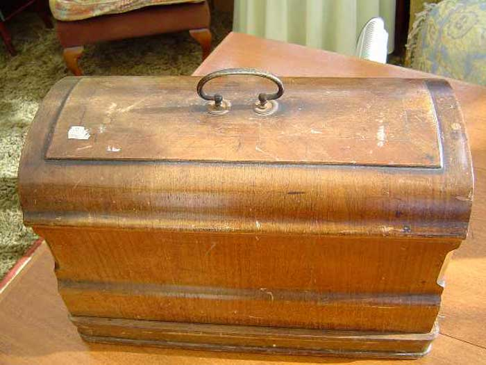
Here it is, straight from the antique shop. Not a pretty sight! That case is showing several of the problems that the restorer has to be able to overcome – scratches, dirt etc. But hang on! Scratches and dirt aren’t a big problem! We can get rid of those by cleaning – we don’t want to be doing a full-blown restoration for the sake of a bit of dirt and a few scratches.
Let’s take a closer look –
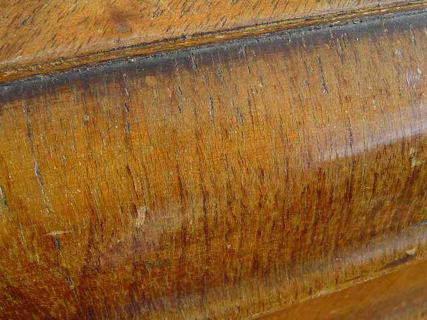
Ah-ha! This looks a bit more serious. The shellac has perished.
CHECKING FOR UNDERSTANDING - Do you all know what I mean by “perished”? Is this a term that you beautiful people in exotic, far-off, sun-drenched lands beyond the sea use in your everyday parlance? If not – I’ll explain.
If (say) a vintage car tyre begins to break up because the rubber is so old that it’s starting to crumble and disintegrate, then here in the fens, we’d say that the rubber has “perished”. There’s no way to restore that rubber: once it’s perished, it’s scrap. Well, shellac can do the same thing, and once it’s (significantly) perished, there’s no way it can be restored, so, like the car tyre, the only option is to remove the old item and replace it with a new product that is as similar to the original as possible. Perishing, by the way, in both rubber and shellac, is significantly accelerated by the ultra-violet content of direct sunlight.
I would like to state at this point that if the original shellac were NOT perished, I would have great difficulty justifying stripping off the original finish from an antique or vintage item. The only other times that I would be likely to strip away an original shellac finish would be if it had been over-varnished with a modern varnish (bring me the head of the antique dealer!) or if the natural colour of the wood has been seriously bleached or faded by long exposure to sunlight, in which case I’d have to strip away the finish so as to be able to perform some colour-correction (and don’t you guys go trying THAT one for a long time yet!).
So what other problems are we up against?
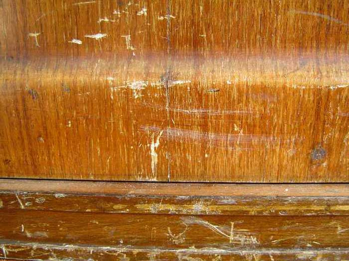
Those scratches look pretty bad. But don’t be fooled – scratches will look worse than they actually are and are usually quite easy to deal with without stripping the original finish. If those scratches were the only damage, I wouldn’t consider stripping the shellac off, but as it’s perished, I’m afraid we’ve no choice.
The picture shows quite severe scratches on both the cover and the base. However, closer examination of the base reveals very little perishing of the shellac – certainly not enough to justify stripping it off.
So where are we? We’ve decided that there’s no alternative to stripping and replacing the finish on the cover, but that the original finish on the base is salvageable. This scenario, for some reason, is surprisingly common, perhaps because the cover tends to get more exposure to sunlight and the elements than the base.
But is it worth restoring? Lets have a look what’s inside.
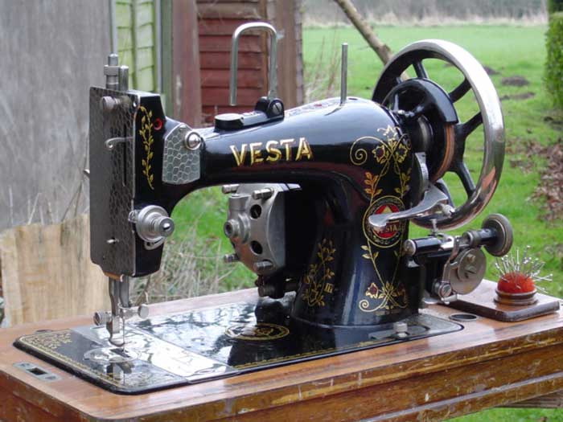
Wow! What a little beauty! It’s pretty obvious that the case has fulfilled its purpose of protecting the contents very well indeed. That’s a very nice, clean example of a late ‘30s Vesta VS111, so it’s well worth putting some effort into making the case look like new again. ……. Right? …… Wrong!
That case is over 65 years old and most certainly does NOT want to look like new: it wants to look like a 65 year old case in very good condition for its age.
Let’s get one or two things clear before we go any further. We are NOT trying for an immaculate French polished finish – we’ll reserve those for concert pianos. It would be totally wrong - not just because the item’s over 65 years old – it would be wrong even if the machine were brand new. French polishing is a very lengthy, labour intensive, skilled and expensive operation. These sewing machines were being turned out in millions and the finish that was slapped onto them was meant to LOOK expensive. It failed miserably in the attempt - but it shone.
I sometimes receive commissions to make decorative or ornamental items in wood. I don’t do it for a living – but it’s nice, and very flattering, when someone wants to pay me for my skills, without me having the pressures that come from relying on it to pay the bills. A long time ago, I attended a master class with an elderly gentleman who’s one of the finest professional ornamental woodworkers in the country. In a matter of minutes, he created a thing of beauty that would have taken us amateurs several hours to make (first sign of a professional – speed). He asked us all what finish we would use. Being experienced woodworkers, we all agreed that on this particular item, we would use a couple of coats of tung oil, buffed to the very slightest hint of a sheen. He agreed that, had the item been going into his own house, that’s exactly what he’d have done – but then he said “I do this for a living, therefore I’m going to slap a pot full of the glossiest gloss varnish I can find onto it – ‘cos the customers never think they’re getting their money’s worth unless it shines!”
The companies who made sewing machines understood this philosophy – the more it shone, the more likely it was to sell (hence the Biblical saying “all that glistens is not gold: it could be a sewing machine”). But their “glisten” most certainly was not gold. On the contrary, it was dirt-cheap! Despite this, had this machine cover been looked after and occasionally polished during its 65 or so year life, it would by now have a warm patina that would be very pleasing to the eye. That’s the finish we’re going to replicate.
Get this very clear in your minds - we are not performing a master class in shiny wood finishes, satisfying though that would be. We are –
RESTORING AN ANTIQUE to what it WOULD LOOK LIKE had it been well looked after
- not to how it looked when it was new and certainly not to some sort of super-shiny fantasy state that rivals the paintwork on a Rolls Royce!
If your friends, on seeing your work, say, “that’s in nice condition”, then you’ve succeeded: if they say “you’ve made a good job of restoring that” – you’ve failed – ‘cos they shouldn’t be able to tell that it’s been restored. Get my drift?
RESTORING THE BASE –
The first thing to do is to remove the head from the base. Invariably, the head is retained by two fixings. These clamp onto pegs that stick out from the hinges and allow the head to be tilted back. These are difficult to photograph while the head’s still in place because on some machines, this one included, the head doesn’t tilt back very far. I therefore removed the head before taking this picture to show their position.
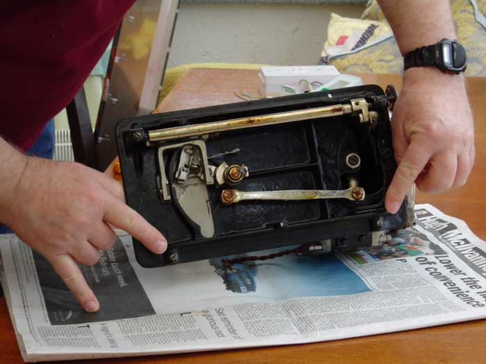
These fixings will normally be either setscrews or grub-screws. I’m informed by a much loved and respected American member of the Needlebar group that there’s a definite difference in terms between Britain and America, in that, to the British, a grub-screw is a specific type of setscrew, but our good American cousins don’t have different names for the different types – they’re all simply “setscrews” over there.
CHECKING FOR UNDERSTANDING – As I will no-doubt forget in future articles that our American buddies don’t know what a “grub-screw” is, and as I am totally ignorant as to what names those of you in other countries use for the basic fixings, let me show you the British standards, then (hopefully) you’ll know what I’m talking about in the future.
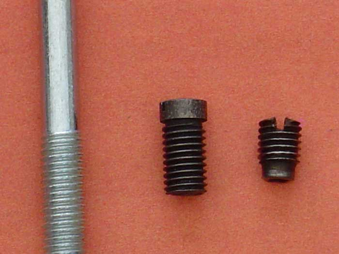
In Britain, the thing on the left of the picture is a “bolt”, characterised by the fact that the thread does not go all the way along it and the un-threaded portion is thinner than the threaded portion. The middle object is a “setscrew”, the thread going all the way to the head (this is, in fact, one of the setscrews out of the Vesta we’re working on). Now in Britain, the critter on the right is a “grub-screw”, this being a headless setscrew that, if screwed far enough into a deep threaded hole, would disappear completely – just like a grub. This one, by the way, is from a Singer model 66.
The terms “bolt” and “screw” have nothing to do with the shape of the head, i.e., one can have a hexagon head and be a “screw” or a slotted head and be a “bolt”.
Anyway, let’s get the head off. You’ll need a fairly short, flat bladed screwdriver to just slacken, but not remove, the two setscrews. Now carefully waggle the head off its two mounting pins and put it somewhere safe and out of the way.
Now let’s have a closer look at that base –
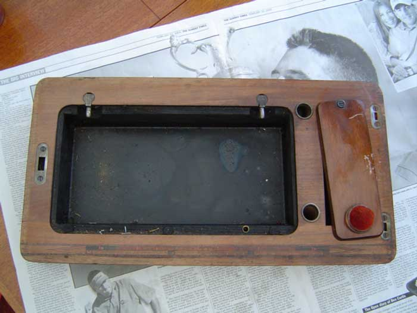
Um - pretty grim. Nasty scratch on the accessory-box lid, very dirty and a little perishing around the edge where the lid doesn’t quite cover it – but I’m not stripping it just for the sake of that bit. Let’s take a closer look –
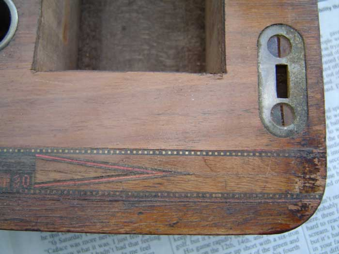
That measuring strip looks pretty grotty! (One of these days, I must tell you how those strips were made). See anything you should be taking note of? You’ve got it – those screw heads are aligned – if you take them out, put them back the same way - more about that later. Now what about the edge –
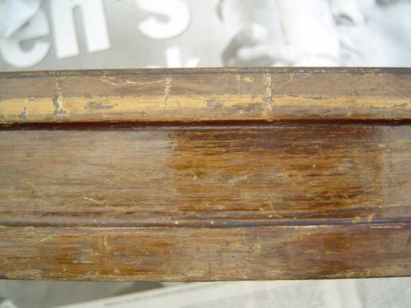
Pretty battered – but not perished, so I’d better put my money where my mouth is and prove to you that this can be restored simply by cleaning.
THE FENMAN’S ELIXIR OF LIFE –
At times in these articles, I’ll describe concoctions that I make up myself to perform particular tasks. Few if any of these are wholly my own invention: most are just my version of brews that have been used by craftsmen since time immemorial. The concoction I use the most is my furniture cleaner: I call it my “Elixir of Life” – guaranteed to cure every ailment known to mankind, from dirt and scratches to beriberi and the black death! It comes in two forms; the “safe” version and the “who dares, wins” variety. The recipes are a closely guarded secret, known only to those favoured by the gods, and are guarded by pain of death!
They are as follows –
ELIXIR OF LIFE – SAFE VERSION –
Equal portions of
- white spirits (mineral spirits),
- vinegar (malt, if possible but pickling vinegar, cider vinegar, white wine
vinegar etc. should be OK)
- linseed oil (preferably raw but boiled will do)
ELIXIR OF LIFE – WHO DARES, WINS VERSION –
- 2 parts white spirits (mineral
spirits)
- 2 parts vinegar (as above)
- 2 parts linseed oil (as above)
- 1 part methylated spirits (de-natured alcohol)
So what’s the difference between the two? Well, the “safe” version is safe - no more clues. The “who dares, wins” version is excellent – but you have to work fast, as it contains alcohol, which (as you all know by now, if you’ve been paying attention) dissolves shellac – so if you work too slowly, it’ll strip the finish off for you whether you like it or not! However, like a cold toilet seat, its advantages outweigh its disadvantages.
As removers of dirt and hiders of scratches, there’s little to choose between the two versions. What the “who dares” version does that the “safe” version doesn’t is to slightly dissolve the surface of the shellac, so that any small cracks or early stages of ageing literally melt away. With the “safe” version, you can work as slowly as you like, and if any gets splashed onto surfaces where it shouldn’t be, you simply wipe it off. With the other version, you scrub it on, just as with its better-behaved cousin, but within about half a minute or so, you’ll need to be wiping it off again, preferably with an absorbent paper kitchen towel. If you splash any onto other shellacked surfaces – it’ll make a mark that you’ll struggle to get rid of. If you press your finger onto the surface while it’s still wet, you’ll leave a permanent fingerprint in the shellac. If you splash any onto the metal head of the machine – it’ll fetch the finish off that very nicely!
I use the “who dares” version all the time. All I’m saying is – move the piece you’re working on well away from the rest of the machine, avoid pressing your finger against the shellac while it’s still wet and wipe the stuff off again within (about) 30 seconds or so. If you don’t feel confident that you can do all that, just leave out the alcohol.
Both are applied using our good old friend, 0000 wire wool – the most useful tool in the restorer’s toolbox. The ingredients in the elixir will separate out from each other quite rapidly in the (air-tight) bottle, so give it a good shake, remove the top, hold your pad of 0000 against the top of the bottle and tip some onto it. Now scrub the wood for all you’re worth.
The complete restoration of the base could take as long as ten minutes – if you’re a really slow worker!
So what does it look like after it’s been scrubbed with the elixir and wiped with a kitchen towel?
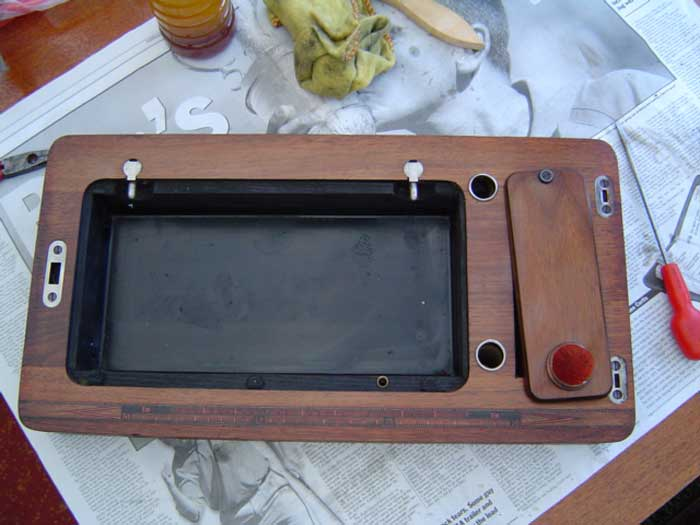
So where’s that scratch on the accessory box lid gone? Notice that I didn’t bother to remove the metal furniture – I just cleaned it with the same stuff. Let’s take a closer look.
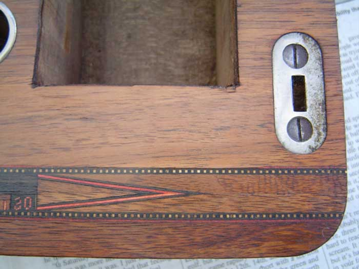
See what I mean about not stripping it? That wood looks pretty darn good to me! But the edge was a real mess – what does it look like now?
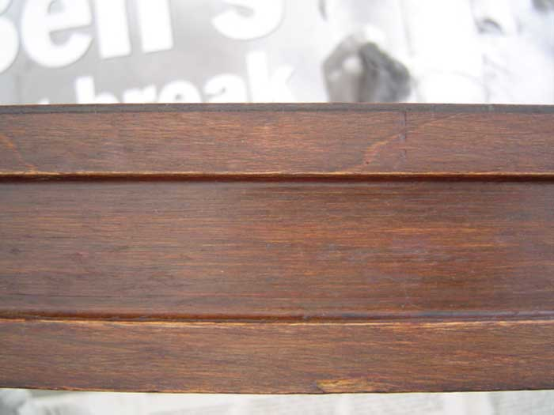
That’s exactly the same part of the edge that was in the “before” photograph. Not bad, eh? A bit of wax polish is all that’s needed to complete the restoration of the base. Did it take you ten minutes? It took me less than two – but I’ve done it a few times before.
One more interesting picture, to show you how those seemingly awful scratches vanish like magic - “before your very eyes!”
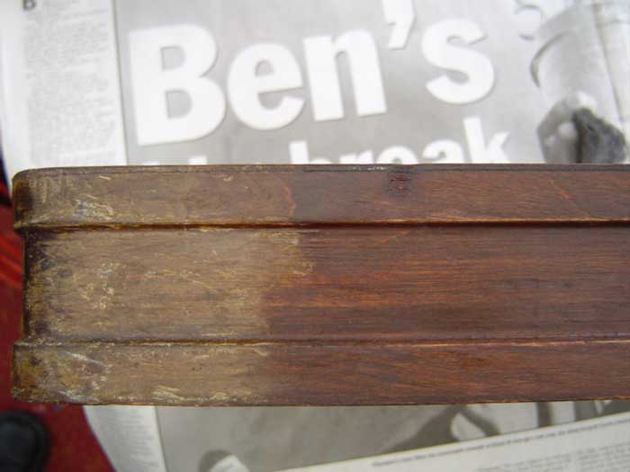
Convinced? Consider yourself to be a restorer now? Well we’ll soon wipe that smug smile off your face! It’s time for the cover.